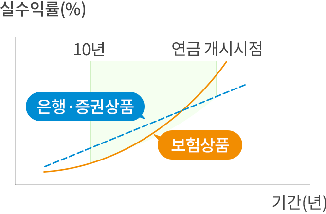

연금보험공시 조회
| 기준일 | 2021.06.14 | ||
|---|---|---|---|
| 납입보험료 | 100,000,000원 | ||
| 적립금 | 10,000,000원 | ||
| 해지환급금 | 10,000원 | ||
| 누적수익률 | 10.00% | ||
산출기준
- 납입보험료:
기본계약(적립계약) 총 납입보험료 - 적립금:
적립원리금 + 배당적립금 + 기지급연금액 - 해지환급금:
해지 시 지급되는 환급금으로 기타소득세, 해지가산세 및 보험계약대출원리금이 차감되기 전 금액 - 누적수익률:
{(적립금/납입보험료) - 1} × 100
금융기관별 연금저축 수수료 비교
 [수수료 비교]
[수수료 비교]

[실수익률 비교]
수수료 부과 및 수익률 특성
- 보험회사(연금저축)
- 은행, 자산운용사(연금신탁)